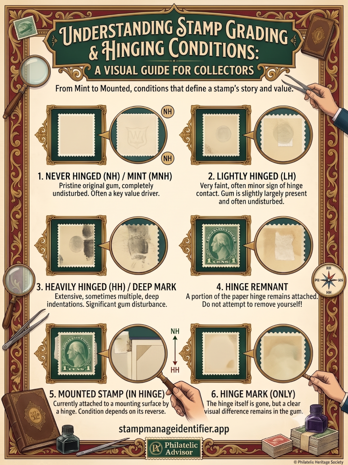
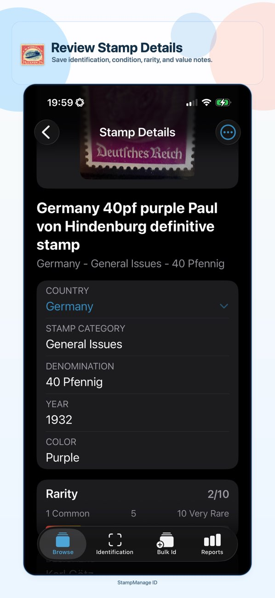
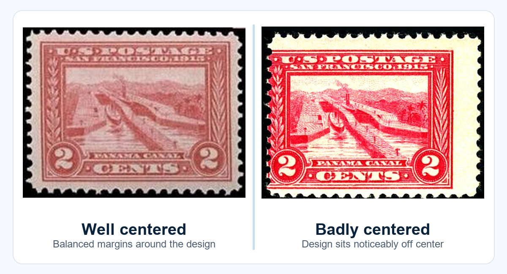
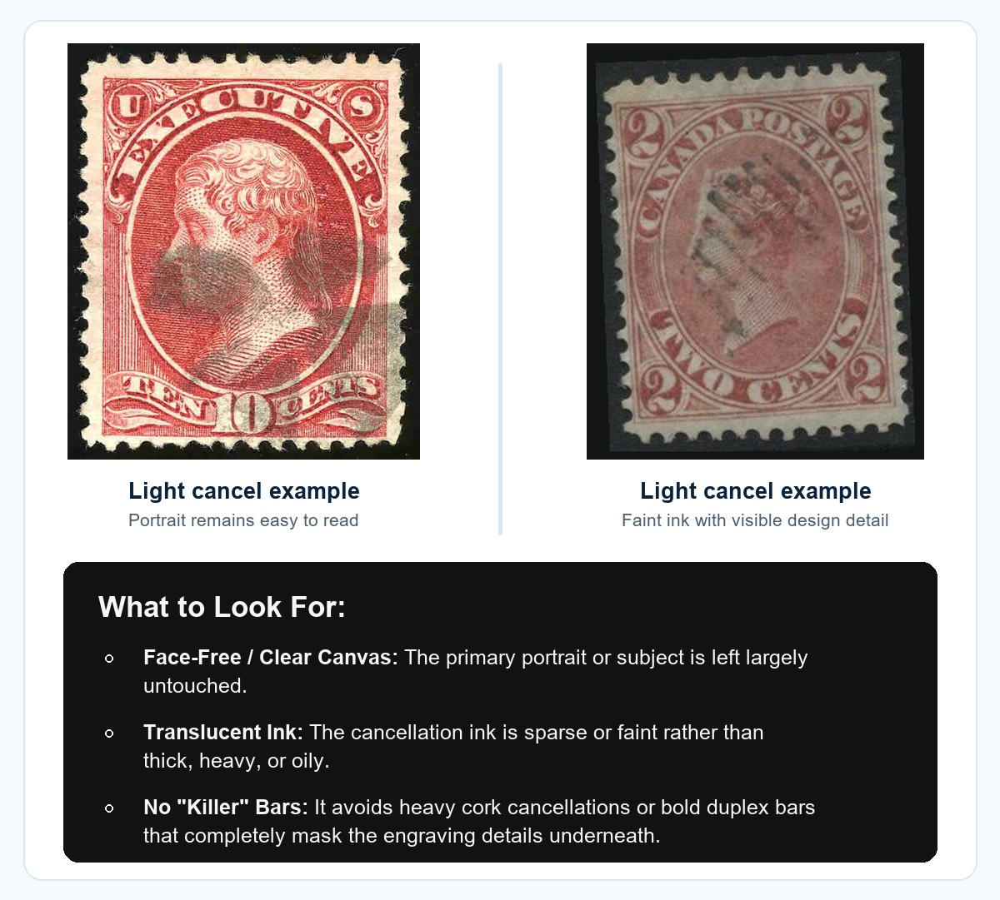
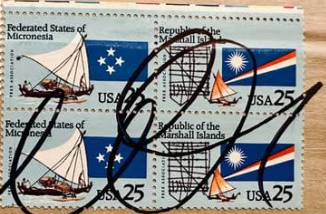
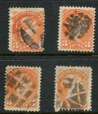
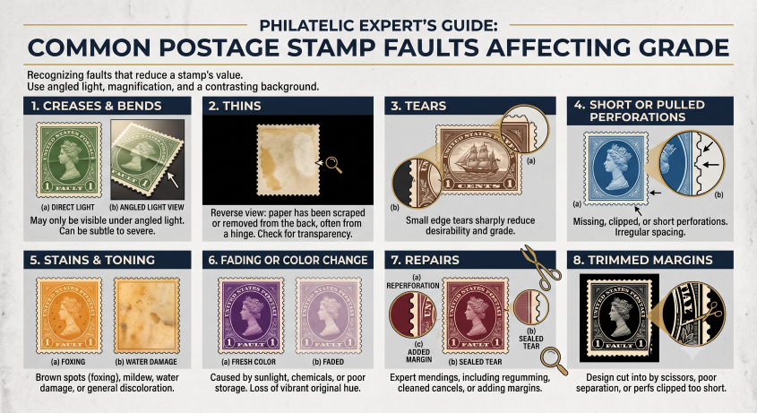
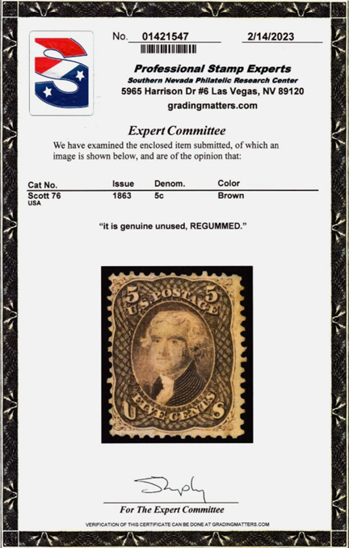

Stamp grading is the process of judging a stamp's condition and eye appeal. Identification tells you what the stamp is; grading helps explain why two examples of the same stamp can sell for very different prices. StampManage Identifier can help you record condition notes, rarity clues, value ranges, and follow-up questions, but valuable stamps should still be reviewed by a qualified expert or grading service.

What stamp grading measures
A stamp grade is not based on one detail. Collectors usually consider the front design, margins, perforations, cancellation, paper, color, gum, hinge marks, repairs, and overall eye appeal. A stamp with excellent centering can still grade lower if the back has disturbed gum, a thin, or a hidden crease.
- Centering: how evenly the design sits inside the margins or perforations.
- Soundness: whether the stamp is free from tears, creases, thins, stains, pulled perforations, or repairs.
- Freshness: whether the color, paper, and impression still look clean and natural.
- Mint or used status: whether the stamp is unused with gum, hinged, never hinged, or postally used.
- Eye appeal: the overall visual impression after all condition factors are considered.

Leading stamp grading and expertizing services
For common stamps, your own notes may be enough. For scarce, expensive, altered, or frequently forged material, a certificate can make a major difference. Well-known services include Professional Stamp Experts (PSE), Philatelic Stamp Authentication and Grading (PSAG), The Philatelic Foundation (PF), and the American Philatelic Expertizing Service (APEX) from the American Philatelic Society. Some services focus on numerical grading, some focus on expertizing and certificates, and some do both.
- PSE: commonly associated with numerical grading for United States stamps.
- PSAG: offers philatelic authentication and grading services.
- The Philatelic Foundation: a long-established expertizing body known for certificates and research resources.
- APEX: the American Philatelic Society's expertizing service for authentication opinions.
Before submitting a stamp, check each service's current submission rules, fees, turnaround times, and collecting areas. For worldwide stamps, country-specific expert committees or specialist societies may be more appropriate than a general service.
Centering and margins
Centering is one of the first things collectors notice. On perforated stamps, compare the distance from the printed design to the perforations on all four sides. On imperforate stamps, look at the width and balance of the margins. Better centering usually means higher eye appeal, but only if the stamp is also sound.
Typical centering language includes average, fine, very fine, extremely fine, and superb. A stamp may be visually attractive even if it is not perfectly centered, especially if it is scarce or historically important. For common stamps, poor centering often has a larger impact because better examples are easier to find.

How cancels affect grading
For used stamps, the cancellation is part of the grade. A light, clean cancel that leaves the design visible is usually preferred. A heavy cancel, smudged cancel, or cancel that covers the central portrait or design can reduce eye appeal. Some cancellations, however, are collectible in their own right. A rare town cancel, fancy cancel, railroad marking, or historically important postmark can add interest even when it is visually strong.
Lightly Cancelled Stamps

Heavily Cancelled Stamps
1. The Modern Marker Over-Cancel

Why it is heavily cancelled: Modern postal workers sometimes use thick, permanent felt-tip markers to hand-cancel mail that missed the automated sorting machines. Philatelists generally dislike this because the heavy, oily black ink can cover large parts of the design and permanently damage the visual appeal of the stamp.
2. Classic Heavy Cork and Killer Cancels

Why they are heavily cancelled: In the 1800s, postmasters often used hand-carved cork stamps or heavy iron killers to make sure a stamp could not be washed and reused. From a grading standpoint, a heavy cancel can reduce eye appeal when it obliterates the engraving, portrait, denomination, or other important design details.
Philatelic Summary: Light vs. Heavy
| Metric | Lightly Cancelled | Heavily Cancelled |
|---|---|---|
| Design Integrity | Most of the portrait, text, and design remain visible. | Major design elements are obscured or hidden. |
| Ink Saturation | Thin, gray, translucent, or localized strike. | Thick, dark, saturated black or oily ink. |
| Collector Value | Usually preferred for ordinary used condition. | Often discounted unless the cancel itself is a scarce or collectible variety. |
Grading the reverse of a stamp
The back of a stamp can matter as much as the front. For mint stamps, gum condition is critical. Collectors look for original gum, hinge marks, disturbed gum, regumming, fingerprints, bends, and adhesion damage. For used stamps, the reverse can reveal thins, tears, repairs, paper remnants, hinge remains, staining, and expert marks.
- Mint never hinged: unused with original gum and no hinge disturbance.
- Lightly hinged: minor hinge trace or small gum disturbance.
- Heavily hinged: obvious hinge remnants or significant gum disturbance.
- No gum: can be acceptable for some older issues but usually affects value.
- Regummed: a serious concern when gum has been added to improve appearance.
Always photograph both sides. In StampManage Identifier, keep notes such as "small hinge remnant," "possible thin at top," "heavy cancel," or "gum disturbance" so future value research has context.
Common condition problems that reduce grade
Many faults are easy to miss in a quick scan. Use angled light, magnification, and a dark or contrasting background when checking condition.

When to get a certificate
Consider professional expertizing when a stamp appears scarce, expensive, frequently forged, altered, or unusually valuable compared with similar stamps. Certification is also useful before selling a higher-value stamp because buyers often trust a recognized opinion more than an unsupported listing description.
A certificate does not guarantee a future sale price, but it can clarify identity, genuineness, faults, repairs, and sometimes grade. If a stamp has a very low market value, certification fees may cost more than the stamp is worth.

How StampManage Identifier fits into grading
Use StampManage Identifier as your working record before and after grading. Save clear images, record suspected faults, add value ranges, note whether the stamp should be expertized, and keep the certificate number or grading result with the stamp record after review.
- Scan or photograph the stamp front and reverse.
- Confirm country, issue, year, denomination, and variety.
- Record centering, cancel, gum, perforations, and faults.
- Use Google, catalogs, and dealer listings to compare similar examples.
- Submit valuable or questionable stamps to the right expertizing service.
Useful external resources
- Professional Stamp Experts (PSE)
- Philatelic Stamp Authentication and Grading (PSAG)
- The Philatelic Foundation
- American Philatelic Society APEX stamp authentication